Refonte complète du site d'une galerie d'art contemporain parisienne, de l'analyse au prototype codé et testé.
La Galerie Anne Barrault existe depuis 1999 dans le Marais. Elle défend des artistes émergents à côté de figures établies, avec un vrai parti pris curatorial.
Son site, lui, ne racontait rien de tout ça. Lent, daté, difficile à parcourir, il donnait l'impression d'un lieu qui n'expose plus. Ma mission a été de reconstruire ce site vitrine pour qu'il ressemble enfin à la galerie.
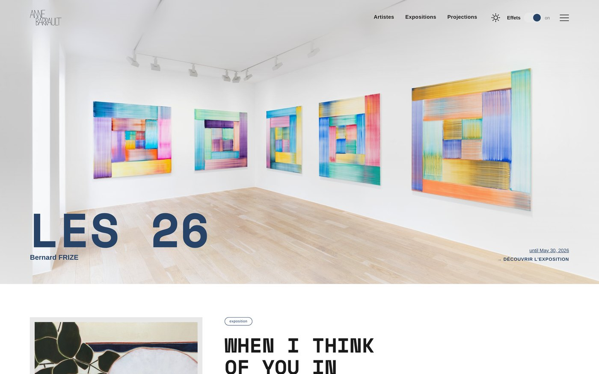
Toutes les images se chargeaient dès l'arrivée sur la page d'accueil, soit environ 5 Mo transférés avant même d'avoir lu une ligne. Sur une connexion moyenne, le visiteur attend devant un écran vide.
Les horaires, l'adresse, les dates d'exposition étaient dispersés et traités visuellement comme le reste. Il fallait chercher pour trouver ce que tout le monde vient chercher en premier.
Dans la galerie, les murs sont blancs et les œuvres parlent seules. En ligne, l'utilisateur subissait un flux d'images empilées sans respiration. Deux expériences opposées pour un même lieu.
Comment faire un site de galerie qui donne envie de regarder, sans imposer une seule image à quelqu'un qui n'a pas encore décidé de regarder ?
J'ai relevé le poids des pages, le nombre de clics pour atteindre une information pratique, et la profondeur de l'arborescence. Trois niveaux pour arriver à une œuvre, cinq secondes d'attente sur l'accueil.
Le même réflexe partout : une mosaïque de vignettes en page d'accueil. Ça remplit l'écran mais ça met toutes les œuvres au même niveau, donc plus rien ne ressort. Les rares sites qui m'ont marqué faisaient l'inverse et assumaient le vide.
C'est là que le concept est né. Une galerie, ce sont des murs blancs, de l'espace entre les œuvres, et une seule chose à regarder à la fois. J'ai décidé de traduire ça à l'écran plutôt que d'illustrer la galerie avec des photos de la galerie.
Le problème n'était pas le manque d'images. C'était qu'elles étaient toutes là, tout le temps, sans que personne ne les ait demandées.
Le site ne cherche pas à impressionner. Il enlève tout ce qui n'est pas l'œuvre, l'artiste ou l'information utile, et il laisse le reste respirer.
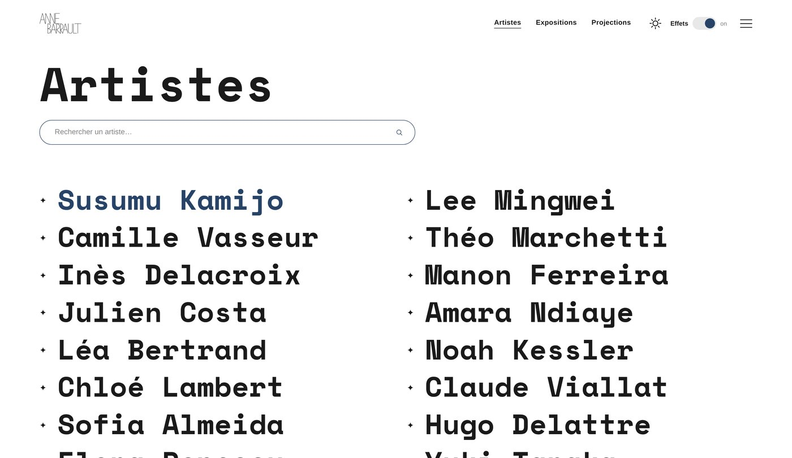
Space Mono pour les titres. Une monospace donne un côté fiche technique et archive qui va bien à l'art contemporain, et elle reste très lisible en grand.
Police système pour le corps de texte. Elle est déjà installée sur l'appareil du visiteur, donc aucun fichier à télécharger et une lecture nette sur tous les écrans.
Chaque visuel est posé sur un aplat gris avec 14 px de marge intérieure, comme un passe-partout d'encadrement. Ça donne sa signature au site et ça absorbe les différences de format entre les photos fournies par la galerie.
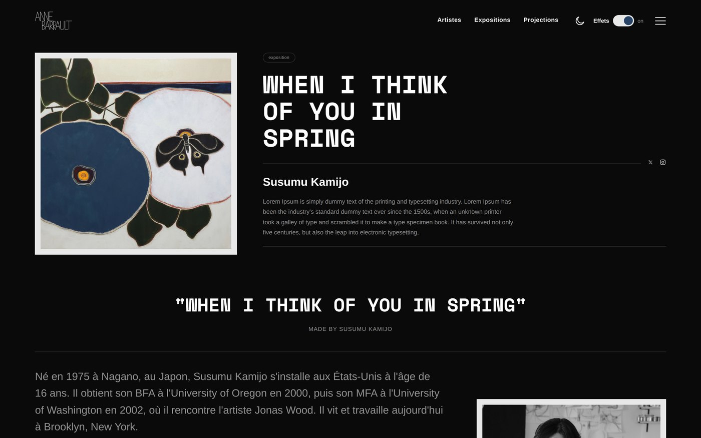
J'ai mis l'arborescence à plat. Cinq rubriques accessibles depuis n'importe quelle page, deux niveaux de profondeur maximum, et les archives d'expositions traitées comme un filtre plutôt que comme une page à part.
| Rubrique | Contenu |
|---|---|
| Artistes | Mur de noms, fiches individuelles |
| Expositions | Catalogue filtrable, en cours et archives |
| À propos | Histoire de la galerie, infos pratiques |
| Projections | Dates à venir, séances passées |
| Boutique | Redirection vers le site marchand externe |
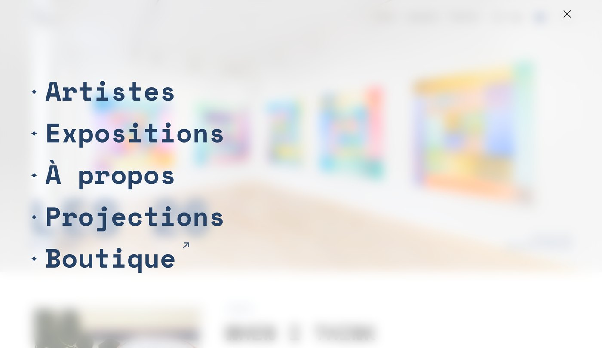
Les maquettes ont été faites sur Figma, avec un design system complet : couleurs, typographies, composants. Ensuite j'ai choisi de coder le prototype plutôt que de le simuler.
Ça change tout au moment de tester. Le site s'ouvre sur le téléphone du testeur, les temps de chargement sont réels, et si une animation rame, elle rame pour de vrai.
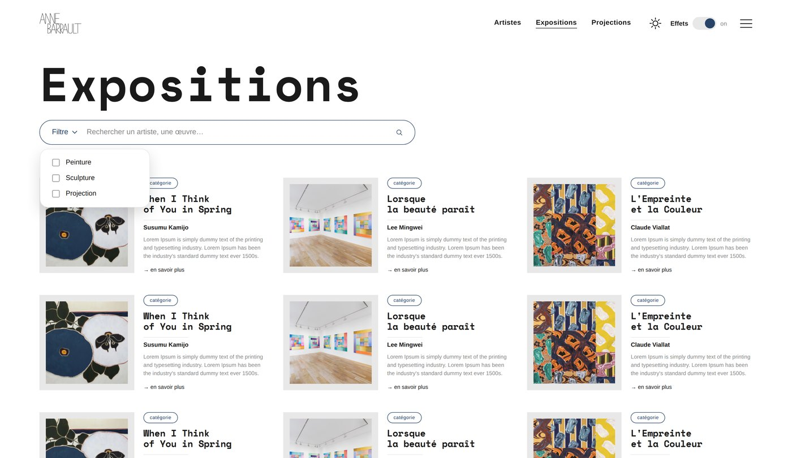
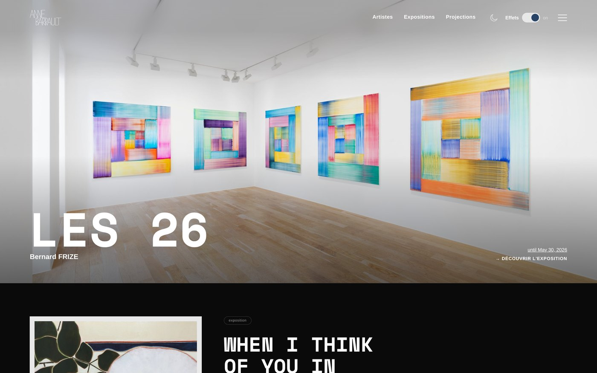
HTML, CSS et JavaScript écrits à la main, aucun framework, aucune bibliothèque. Une galerie doit pouvoir faire reprendre son site par n'importe quel prestataire dans cinq ans, sans avoir à mettre à jour une pile de dépendances.
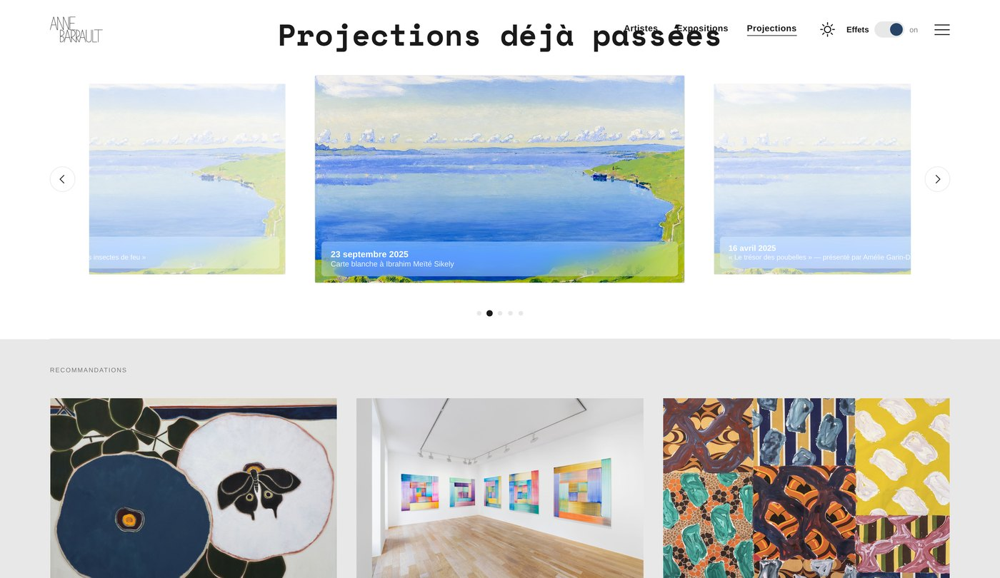
Pas de version mobile séparée. Un seul point de bascule à 860 px, les colonnes s'empilent, les marges se resserrent, les titres se calent sur la largeur de l'écran.
Rien n'est retiré au passage. Un contenu qu'on masque en mobile est un contenu qu'on ne remettra jamais, et une galerie sans équipe technique ne peut pas maintenir deux sites en parallèle.
La structure a tenu telle quelle. Ce sont les réglages hérités du desktop qui ont cassé : une largeur de carte, une marge de puce, une croix de fermeture hors de portée du pouce.
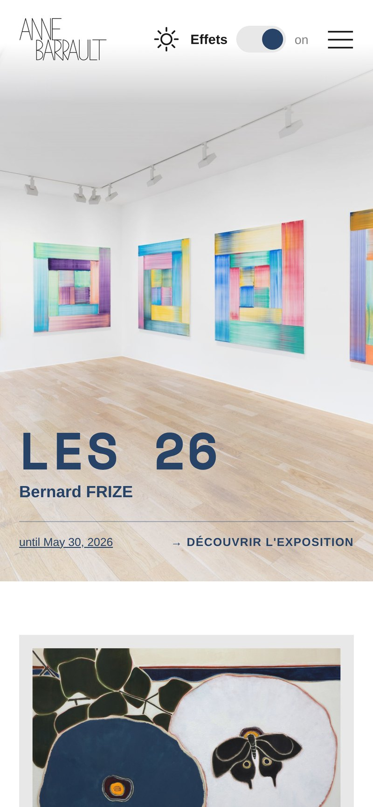
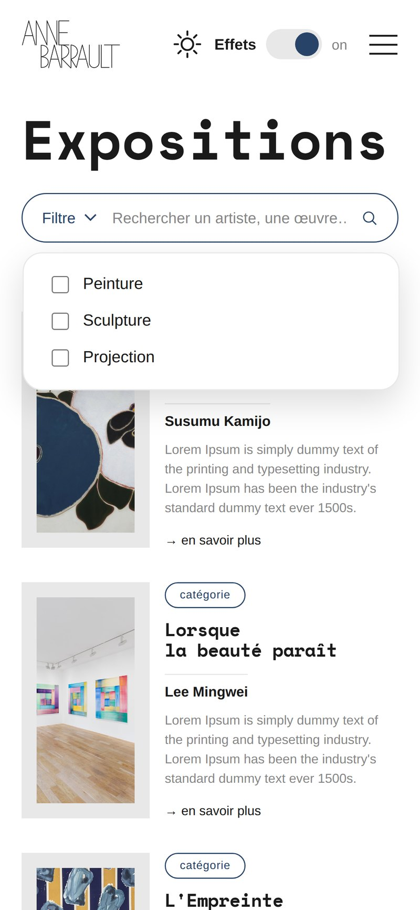
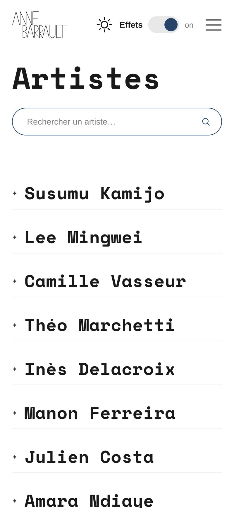
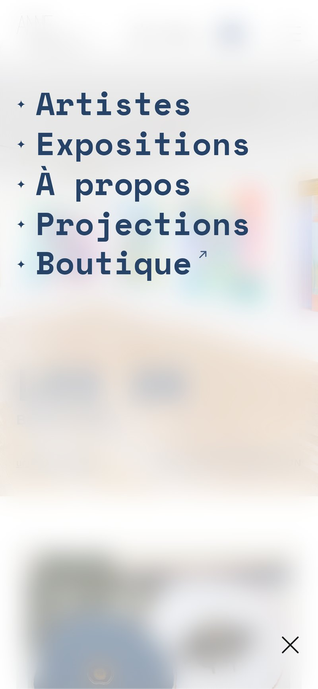
L'apparition des blocs au scroll, l'agrandissement des images au survol qui faisait bouger la grille, et le défilement automatique du carrousel. Trois idées agréables une fois, pénibles la deuxième.
| Élément | Déclencheur | Durée |
|---|---|---|
| Menu plein écran, descente verticale | Clic | 500 ms |
| Bascule clair et sombre | Clic | 350 ms |
| Bouton d'effets, pastille qui glisse | Clic | 250 ms |
| Carrousel, translation et mise à l'échelle | Clic ou glissement | 500 ms |
| Nom d'artiste qui passe au bleu | Survol | 200 ms |
| Carte d'exposition, image assombrie | Survol | 250 ms |
Le site respecte le réglage système de réduction des animations : si le visiteur l'a activé sur son appareil, toutes les transitions sont coupées. Contraste maximal, navigation au clavier avec prise de focus visible et lien d'évitement en tête de page.
Deux habituées des galeries, deux personnes qui n'y vont jamais, une personne de plus de 60 ans pour la lisibilité. Trois sur ordinateur, deux sur téléphone.
Méthode de la pensée à voix haute : je donne une tâche, je me tais, je note. Aucune aide, même quand ça bloque, sinon je teste mon explication et pas l'interface.
| Tâche | Réussite | Temps | Ce que j'ai vu |
|---|---|---|---|
| Trouver l'adresse et le téléphone | 5 / 5 | 22 s | Tout le monde descend au pied de page avant d'ouvrir le menu |
| Trouver les œuvres d'un artiste | 4 / 5 | 41 s | Le seul échec vient d'un nom sans fiche qui réagissait au survol |
| Trouver une exposition de peinture | 3 / 5 | 1 min 06 | Le filtre est vu tard, la recherche est utilisée à la place |
| Acheter une édition | 5 / 5 | 18 s | Réussi, mais 3 sur 5 n'ont pas vu qu'ils avaient quitté le site |
Personne ne s'est perdu dans l'arborescence, personne n'a eu besoin de revenir à l'accueil pour se repérer, et la lecture n'a posé aucun problème, y compris à la testeuse de plus de 60 ans.
Le bouton d'origine, marqué simplement on et off, n'a été compris par personne. Quatre réponses sur cinq : c'est pour couper le son. Le carrousel ne se glissait pas au doigt. La sortie vers la boutique passait inaperçue.
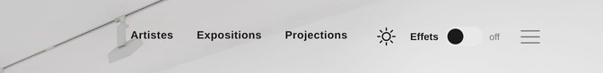
Au départ, ce bouton devait couper les images : le site restait en texte seul tant qu'on ne survolait rien. En construisant le prototype, j'ai compris que ça se retournait contre la galerie. Son métier est de montrer des œuvres, et on ne fait pas travailler un visiteur pour voir une toile.
J'ai gardé l'idée et déplacé la cible. Le bouton ne coupe plus les images, il coupe les effets : flou, transparence, accent coloré. Le silence visuel reste, il porte sur le bruit et plus sur les œuvres. Et comme ces effets sont ce qui coûte le plus cher à afficher, le gain de performance est réel.
| Ce qui bloquait | Ce que j'ai fait |
|---|---|
| Le bouton on / off incompris | Étiquette Effets, état affiché à côté, explication au survol |
| Le menu burger cherché sur ordinateur | Les trois rubriques principales en toutes lettres au-delà de 1200 px |
| Le carrousel qui ne se glissait pas | Glissement au doigt et points de progression sous les cartes |
| La sortie vers la boutique invisible | Flèche sortante et ouverture en nouvel onglet. La mention écrite a été testée puis retirée |
| Des noms d'artistes sans fiche | Testés en estompé puis rétablis : une liste à moitié grise donne une galerie en sommeil |
| La croix du menu hors de portée du pouce | Croix ramenée en bas d'écran, fermeture par appui sur le fond |
| Le mur de noms illisible sur téléphone | Puce étoilée passée devant le nom, règle étendue à tous les gabarits |
| Les animations non réductibles | Prise en compte du réglage système de réduction du mouvement |
| L'image du hero mal cadrée | Recadrage plein cadre quel que soit le format de la photo |
Presque toutes les frictions relevées en test étaient des problèmes de vocabulaire, pas de structure. Les gens savaient où aller, ils ne savaient pas ce que faisait un bouton. C'est plus facile à corriger qu'une arborescence ratée, et je ne l'avais pas anticipé.
La deuxième leçon est plus dure : j'ai dessiné le desktop d'abord et adapté le mobile ensuite. Les vrais problèmes de ce projet étaient presque tous des problèmes mobiles, et je les ai découverts à la fin au lieu du début.
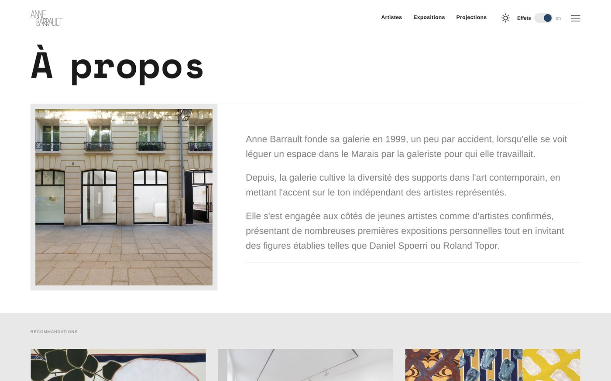
Une interface d'administration pour que la galerie change ses expositions sans passer par un développeur, et le branchement du lien Boutique sur le vrai compte marchand. Ces deux chantiers sont documentés et chiffrés pour le commanditaire.
| Domaine | Mise en pratique |
|---|---|
| Stratégie | Analyse de l'existant, positionnement, cadrage du besoin avec le commanditaire |
| UX | Architecture de l'information, parcours utilisateurs, wireframes, protocole de test et analyse des résultats |
| UI | Direction artistique, système typographique, design system Figma, déclinaison responsive |
| Motion | Micro-interactions, transitions, courbes d'accélération, arbitrage entre effet et lisibilité |
| Intégration | HTML, CSS et JavaScript sans framework, thèmes par variables, mémorisation des préférences |
| Accessibilité | Contrastes, navigation clavier, lien d'évitement, réduction du mouvement, sobriété numérique |
| Livraison | Documentation technique, recommandations de maintenance, transmission au commanditaire |
7skyfe.github.io/anne-barrault
Il se teste directement dans un navigateur, sur ordinateur comme sur téléphone.